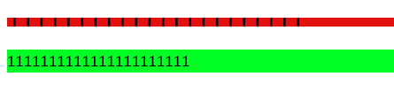
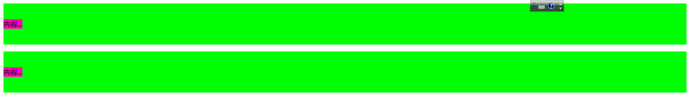

line-height和vertial-align学习笔记
1 line-height
一个div元素的高度其本质上是由line-height属性决定的下面做实验。1
2
3
4
5
6
7
8
9
10
11
12
13
14
15
16
17
18
19
20
21
22
23
24<!DOCTYPE html>
<html>
<head>
<title></title>
<meta charset="utf-8">
<style type="text/css">
p:nth-child(1){
background-color: #E31010;
font-size: 26px;
line-height: 10px;
/*overflow: hidden;*/
}
p:nth-child(2){
font-size: 16px;
line-height: 26px;
background-color: #00FF24;
}
</style>
</head>
<body>
<p >1111111111111111111111</p>
<p >1111111111111111111111</p>
</body>
</html>

我们可以看到当font-size大于line-height的时候溢出需要overflow处理验证了这一点，但是另外一方面font-size有时候也决定了line-height(例如:1em)。我们能够看到绿色的字上下都有距离，这是行距:
行距=’line-height’-‘font-size’
所以一行元素使用vertical-align能够居中因为上下行距相等所以近似使其上下居中，但是为什么是近似相等因为。vertical-align是在基线上与等分析按之间的距离基本上是X的高度所以不同的字体不一样。因此是近似居中。
2 line-height的一些细节
属性值
line-height的默认值是normal,但是不同字体以及不同浏览器的line-height的值都是不一样的。
line-height具有数值、百分比、长度值三种属性。他们在继承上有细微的差别，如果使用数值作为属性值那么所有属性值得继承都是这个值。但是如果使用其他的值则是在子元素计算之后得出的值。
###line-height的大值特性1
2
3
4
5
6
7
8
9
10
11
12
13
14
15
16
17
18
19
20
21
22
23
24
25
26
27
28
29
30
31
32
33<!DOCTYPE html>
<html>
<head>
<title></title>
<meta charset="utf-8">
<style type="text/css">
.box{
line-height: 96px;
background-color: #00FF05;
}
.box span{
line-height: 20px;
background-color: #FF00BF;
}
.box2{
line-height: 20px;
background-color: #00FF05;
}
.box2 span{
line-height: 96px;
background-color: #FF00BF;
}
</style>
</head>
<body>
<div class="box">
<span>内容...</span>
</div>
<div class="box2">
<span>内容...</span>
</div>
</body>
</html>

我们可以看到两个外部box元素都是96，那么box2类下面的属性如何来理解呢。主要是因为无论内联元素的line-height如何进行设置，最终父级元素的高度都是由数值最大的那个line-height。上面的情况根据我的理解，每个内联元素都是会有一个空白节点在内联元素的前面，内部的span高度为96px时，那个空白节点则变为96px将其撑开。
vertial-align
内联元素默认都是沿着字母x的下边缘对齐的，对于图片等替换元素则是底部。在CSS中vertical-align的属性百分比则是基于line-height进行计算的。
注：vertial-align只能应用于内联元素以及dispaly为table-cell的元素。
图片底部的间隙
1 | <style type="text/css"> |
如图所示图片的底部出现了一个缝隙，原因就在于内联元素的前面存在的空白节点，他的基线并不是底部导致会存在一个缝隙。
解决方案如下:
1、图片块状化
2、容器line-height足够小
3、容器font-size足够小
4、设置其他的vertial-align值
inline-block与vertical-align
一个inline-block元素，如果里面没有内联元素，或者overflow不是visible，则该园区的基线就是其margin底边缘；否则其基线就是元素里面的最后一行内联元素的基线。
##参考
张鑫旭 CSS世界